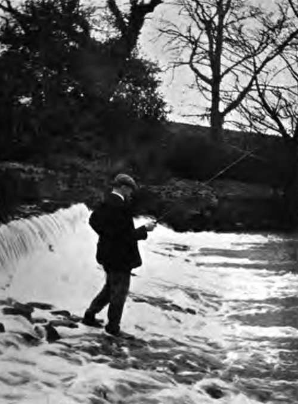
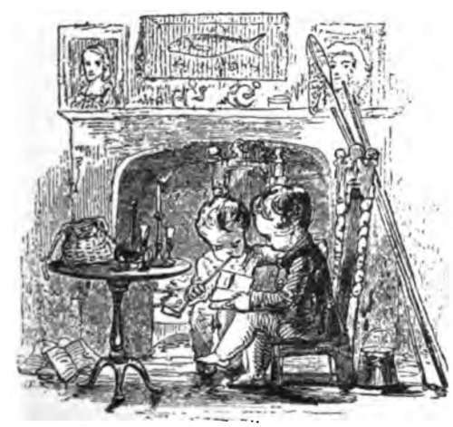
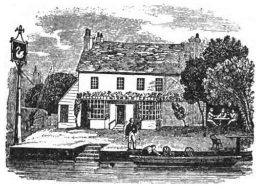

Chapter XVI. Angling For Barbel
Description
This section is from the book "Fishing", by Horace G. Hutchinson. Also available from Amazon: Fishing.
Chapter XVI. Angling For Barbel
It is a curious fact that, although there are plenty of barbel in the Thames and some of its tributaries, it is rare for anglers to have good sport with this strong and handsome fish in such rivers as the Lea, Coin, and Kennet, and common enough to do so in the Thames itself. A very clever Thames angler, the late Mr. T. Hoole, was for some years station-master at Wraysbury. He knew every dodge in barbel fishing, but he often told me that he could not tempt the great barbel in the mill pool on the Coin near his house. Every season he saw them rolling and routing about, and every season he tried them early and late, with all kinds of bait, but I do not think he ever succeeded in getting more than one or two of the smaller fish-certainly he never had the great take he expected. He asked me to have a turn at the wary fellows, but I knew from experience that no fish are more difficult to induce to feed than barbel in a smallish river where you can see them.
In a large river like the Thames or the Trent, if you get one of the professional fishermen to bait a place properly, and the weather and water are right, you have a good chance of good sport, whether ledgering, as is usual on the Thames, or float* fishing in the Trent style. On a bright August or September day, if you can find a reach of the Thames not too much disturbed by the traffic, it is very enjoyable to ledger for barbel with a friend when the fish are " on.n All you want is a light whole cane or other punt rod, fairly stiff, so that it will pitch the ledger tackle out easily. The gut line should be four or five feet in length, made of undrawn gut, tapered so that the last two links are the finest undrawn gut; it should be well tested by drawing it slowly through the left hand firmly closed on it; this is the best way to straighten out a gut cast and also to test its strength. Very often the gut is perfectly good, but has not been properly knotted-perhaps the ends have been cut off so close to the knot that when the gut is soaked and then tested the knot slips. I do not like the ends sticking out, and find the best plan, after making the ordinary fisherman's knot, is to make a single knot round the gut, so that the ends when pulled close up jam against the main knot and point towards it; they can then be cut off close-this is the knot used in making up the best salmon casts. The gut should be soaked well in warm water before the knots are made. About eighteen inches or so from the single hook a flattened bullet is put on the line between two shot six inches apart, so that the bullet can slip up and down between the shot; the edges of the hole through the bullet should be rounded to avoid fraying of the gut-some anglers mount it on a length of gimp in the gut cast, others mount it on a strand of stouter gut. The hook for worm or greaves should be of a size suited to the size of the worms, not large, but larger for lobworm than for smaller worms; it is most important to see that it is extremely sharp and the barb not too large and rank. It is wonderful how barbel can strip the bait off a hook and give a sharp tug at the ledger without being caught-it always reminds me of what we call "coming short" in fly-fishing; you feel the fish pluck at the fly and that is all.
37.- Just Below The Fall.
A good general size for a barbel hook is about an inch long in the shank and about three-eighths of an inch across from point to shank; this is a good deal smaller than many anglers use, but I dislike a big hook. In ledgering for barbel you should fish as quietly as possible, casting the bait down to the spot which has been baited, say fifteen or twenty yards below your punt. Directly you feel that the bullet has reached the bottom wind up the slack, put the check on your Nottingham winch, and hold the rod pointing towards the barbel hole, but a little to the left or right of the spot where the bullet lies. The object of this is that you may see the slightest movement of the end of the rod, which is often more sensitive than the feel of the line on the finger, and enables you to get ready for the double or single " knock," or sharp pull, which shows that a fish has come at your bait. There should be no sudden jerk, the strike should be made by raising the rod point and tightening the line quickly, but not with a snap, and keeping a strong steady pressure on the bent rod and the fish-this will pull the point of the hook in firmly. I used to fish with an old pike angler, who amused me by the vicious way he jerked his tackle and rod when he had a run; three or four times he dropped the point of his rod towards the fish and gave a vigorous jerk, and you heard the twang of the line. I never saw him break it, but he used immensely stout tackle.
In fishing with the ledger the size of the bullet depends on the force of the stream ; the proper size is the lightest which will keep your bait anchored where you want it to be. Barbel are, of course, often taken when fishing with a float in the ordinary Thames style, also with the running line and sliding float preferred by Trent anglers ; also with the ground-bait ledger and tight corking. In float-fishing in the Nottingham style the stream carries the float down twenty or thirty yards, the line being very fine and the reel running freely-it would go down a hundred yards if you liked. In this fishing a slider float is often used ; you have two wire loops on the float, one at the bottom and one about half an inch from the top, the line is passed through both and the float slides freely up and down it. A bit of twig is fastened to the reel line at the depth of the swim you wish to fish. One great advantage of the slider float is that it enables you to cast the bait out to a much greater distance than if the float was a fixture on the line, as it runs down to the shot when you pull up, and after making the cast the shotted line sinks through the rings on the float until stopped by the bit of twig or match fixed at the depth you wish the float to swim. There is a plan I do not remember seeing described before I did so some years ago in the Fishing Gazette, and that is a little dodge for getting a bait out quietly to a great distance, provided you have a current or tide to work with. It does not matter what the bait is, whether fly, or natural, or artificial spinning bait, or worm, all you want is a bit of wood big enough to float away and carry your bait and line to the desired spot; to attach it, all that is wanted is a bit of fine black cotton, which will break when you see your bait has arrived at the desired spot, then you give a little jerk and wind in your fly or spinning bait, or let your ledger rest, or your float swim about till you have a bite. In this way a bait can be got out much farther than it can be cast, and in places where casting is impossible the little log of wood carries the lure noiselessly, and as you work it back it comes very temptingly past fish which would have been disturbed perhaps by a long cast and splash. Of course, you pay out line as the current carries it down. The cotton is fastened to the hook or trace. In sea fishing from piers I have found it a capital dodge for getting a spinner a long way out.
Barbel afford great sport, making a long and determined fight all the time, boring down head first, and striving to get round piles or other obstructions, or round your punt pole.
Barbel spawn in June or July-earlier if it has been a warm spring. The eggs, which are comparatively small in number, hatch out in from six to eight days. They have been hatched artificially in Germany, but merely as an experiment, as barbel are not valued as food fish in Germany, or elsewhere, as far as I know. In Europe the barbel rarely exceeds 16 lbs. or so; fish over 12 lbs. are not common in this country. They will live for a long time in ponds but will not breed, as they are essentially a stream-loving fish, and delight in weir pools and places in a river where the current is broken by obstructions. They are lively, restless fish in the warm months, and for this reason a barbel is sometimes put into a German carp pond, as he stirs up the lethargic carp and keeps them healthy. I do not think that there is any truth in the accusation made by a German writer that barbel destroy salmon and trout eggs, as they are very lethargic in the winter and retire to deep, sheltered holes, huddled together, where they are easily speared by poachers. The noblest fish of the Barbel family is undoubtedly the mahseer of India (Barbus tor), which grows to between one hundred and two hundred pounds in weight and gives grand sport.
In this country the barbel is confined chiefly to the Thames and Trent, some of their tributaries, and a few of the Yorkshire rivers. They are very fond of lamperns, and when those fish were plentiful in the Thames they were a favourite bait. Greaves are used largely by Trent anglers, but the lobworm is the best lure, and so great is the demand for them that there are regular worm farms for breeding them at Nottingham.

Continue to: